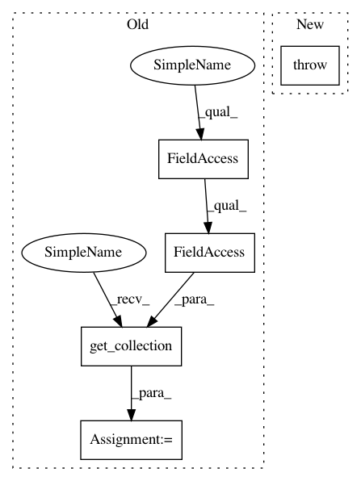

6aa2cf60e7b62c83548a27c80a1f34e38160e0e1,softlearning/algorithms/sac.py,SAC,_init_actor_update,#SAC#,278
Before Change
policy_kl_loss = tf.reduce_mean(policy_kl_losses)
policy_regularization_losses = tf.get_collection(
tf.GraphKeys.REGULARIZATION_LOSSES,
scope=self._policy.name)
policy_regularization_loss = tf.reduce_sum(
policy_regularization_losses)
policy_loss = (policy_kl_loss + policy_regularization_loss)
// We update the V towards the min of two Q-functions in order to
After Change
- min_Q_log_target
- policy_prior_log_probs)
else:
raise NotImplementedError(
"TODO(hartikainen): Make sure to stop policy gradients"
" correctly. See old GaussianPolicy implementation.")
policy_kl_losses = (
log_pis * tf.stop_gradient(
alpha * log_pis - min_Q_log_target + V_value
- policy_prior_log_probs))
In pattern: SUPERPATTERN
Frequency: 3
Non-data size: 5
Instances
Project Name: rail-berkeley/softlearning
Commit Name: 6aa2cf60e7b62c83548a27c80a1f34e38160e0e1
Time: 2018-10-28
Author: hartikainen@berkeley.edu
File Name: softlearning/algorithms/sac.py
Class Name: SAC
Method Name: _init_actor_update
Project Name: rail-berkeley/softlearning
Commit Name: 6aa2cf60e7b62c83548a27c80a1f34e38160e0e1
Time: 2018-10-28
Author: hartikainen@berkeley.edu
File Name: softlearning/algorithms/sac.py
Class Name: SAC
Method Name: _init_actor_update
Project Name: deepchem/deepchem
Commit Name: f1df735684946dbbcefe41e41c7b1c3f2f751a07
Time: 2017-06-05
Author: peastman@stanford.edu
File Name: deepchem/models/tensorgraph/layers.py
Class Name: Dense
Method Name: create_tensor
Project Name: tensorflow/cleverhans
Commit Name: 28e57ccc6bab553b67c04d7da02cd9e1523e48f3
Time: 2018-07-09
Author: dberth@google.com
File Name: cleverhans/model.py
Class Name: Model
Method Name: get_layer_names